3D-Balkendiagramm mit Beschriftungen
3D-Bar-with-Labels
Zusammenfassung
Dieses Tutorial zeigt Ihnen, wie Sie das folgende Diagramm erstellen:
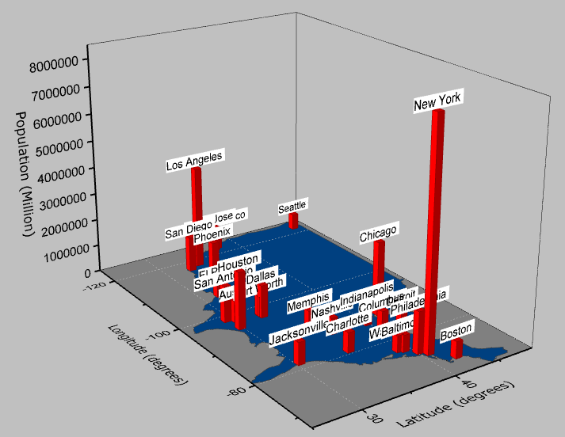
Origin-Version mind. erforderlich: Origin 2015 SR0
Was Sie lernen werden
Dieses Tutorial zeigt Ihnen, wie Sie:
- ein flaches farbiges Oberflächendiagramm erstellen und benutzerdefiniert anpassen.
- den Dialog Diagrammeinstellungen verwenden, um ein 3D-Balkendiagramm zu dem ursprünglichen Diagramm hinzuzufügen.
- Beschriftungen zu dem 3D-Balkendiagramm hinzufügen und diese benutzerdefiniert anpassen.
Schritte
Dieses Tutorial basiert auf dem Projekt: <Origin-Verzeichnis>\Samples\Tutorial Data.opj.
Flaches farbiges Oberflächendiagramm aus einer Matrix erstellen
Öffnen Sie das Tutorial Data.opj und navigieren Sie zu dem Ordner 3D Bar with Labels.
- Aktivieren Sie die Matrix MBook1B.
- Wählen Sie im Origin-Menü Zeichnen: 3D: 3D - farbige Oberfläche, um ein 3D-Diagramm mit aktiviertem Entwurfsmodus zu erstellen:
- 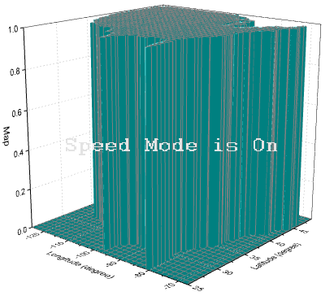
- Klicken Sie im Origin-Menü auf Format: Layer....
- Deaktivieren Sie auf der Registerkarte Größe und Performance das Kontrollkästchen Matrix Daten: maximale Punktzahl pro Dimension. Der Entwurfsmodus wird ausgeschaltet und der Datensatz wird vollständig angezeigt. Klicken Sie auf Übernehmen.
- 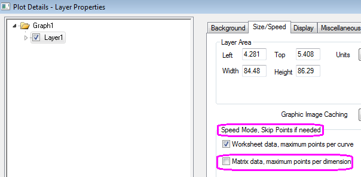
- Erweitern Sie Layer1 und markieren Sie die Zeichnung darunter.
- Um die Zeichnung der US abzuflachen, klicken Sie auf die Registerkarte Oberfläche und aktivieren Sie die Option Flach.
- 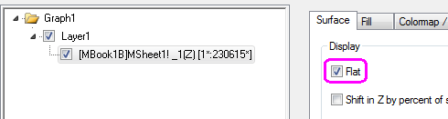
- Aktivieren Sie auf der Registerkarte Füllen die Option Konturfüllung aus Matrix, um die Farben entsprechend der Matrixinformationen festzulegen. Deaktivieren Sie auch das Kontrollkästchen Hintergrundoberfläche füllen.
- Klicken Sie als Nächstes aus die Registerkarte Farbpalette/Kontur, um die Matrixfarben festzulegen, und klicken Sie auf Ebene.
- Aktivieren Sie in dem sich öffnenden Dialog Ebenen festlegen, aktivieren Sie die Option Anz. Hauptebenen und setzen Sie sie auf 2. Setzen Sie die Anz. Ebenen gesamt auf 2 und klicken Sie auf OK, um den Dialog zu schließen.
- 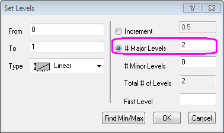
- Klicken Sie auf jede Farbebene unter der Überschrift Füllung, um den Dialog Füllung zu öffnen, und wählen Sie die Farbe. Setzen Sie die drei Farben auf Schwarz, Grau und ein benutzerdefiniertes Blau mit einem RGB von 0, 64, 128 (siehe unten):
- 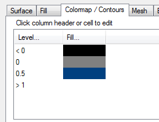
- Deaktivieren Sie auf der Registerkarte Drahtgitter das Kontrollkästchen Aktivieren und klicken Sie dann auf OK um den Dialog zu schließen.
- Das Diagramm sollte dem Bild unten entsprechen:
- 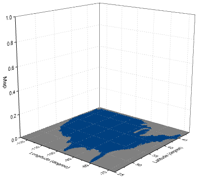
3D-Balken und Beschriftungen hinzufügen und benutzerdefiniert anpassen
- Wählen Sie bei aktivem Diagramm Grafik: Setup Diagramm im Origin-Menü. Der Dialog Diagrammeinstellungen wird geöffnet.
- In der oberen linken Ecke wählen Sie unter Verfügbare Daten die Option Arbeitsblätter im Ordner. Dies stellt die Daten in Book2B zum Zeichnen im selben Diagramm zur Verfügung.
- Markieren Sie Book2B und setzen Sie Diagrammtyp auf 3D-Balken. Setzen Sie im mittleren Bedienfeld die Spalten A1, G1 und D als X, Y bzw. Z. Klicken Sie auf Hinzufügen, um die Zeichnung zu dem aktuellen Layer hinzuzufügen:
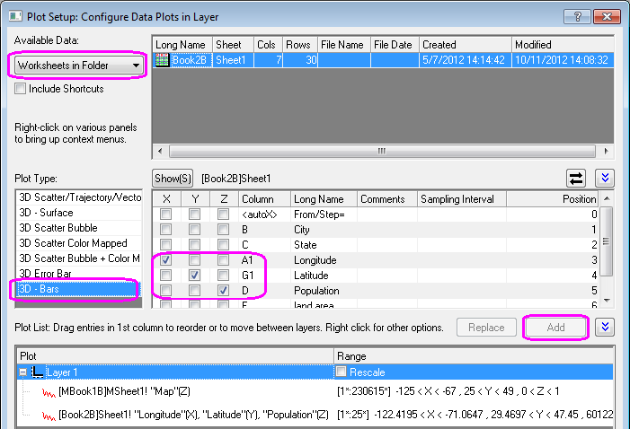
Klicken Sie auf OK, um den Dialog zu verlassen.
 |
Um alle drei Bedienfelder im Dialog Diagrammeinstellungen anzuzeigen, erweitern Sie bitte das Bedienfeld Diagrammtyp, indem Sie auf  klicken, und erweitern Sie das Bedienfeld Verfügbare Daten, indem Sie erneut auf klicken. klicken, und erweitern Sie das Bedienfeld Verfügbare Daten, indem Sie erneut auf klicken.
Bitte lesen Sie unter Mit Hilfe des Dialogs Diagrammeinstellungen zeichnen weitere Informationen zu diesem Thema.
|
- Um das 3D-Balkendiagramm benutzerdefiniert anzupassen, klicken Sie doppelt darauf, so dass der Dialog Details Zeichnung geöffnet wird. Setzen Sie auf der Registerkarte Muster die Farbe des Rands auf Lila und die Füllfarbe auf Rot. Setzen Sie auf der Registerkarte Umriss die Breite (in %) auf 10. Klicken Sie auf Übernehmen.
- Wechseln Sie zur Registerkarte Beschriftung und aktivieren Sie das Kontrollkästchen Aktivieren.
- Wählen Sie unter Beschriftungsformat die Option Col(B):"City", so dass die Beschriftungen den Stadtnamen anzeigen, der sich in Spalte Col(B) des Arbeitsblatts befindet.
- Setzen Sie die Position unter Z auf Oben außen mit einem Versatz von 10 und die Ausrichtung auf die Ebene YZ. Legen Sie die anderen Bedienelemente wie unten fest und klicken Sie auf OK, um den Dialog zu schließen.
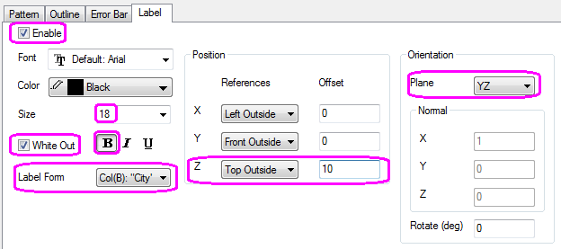
- Zu diesem Zeitpunkt werden die Beschriftungen nicht gezeigt, da die Achsenskalierung zu klein für sie ist, um im Diagrammbereich angezeigt zu werden. Klicken Sie doppelt auf die vertikale Achse (Z-Achse) und setzen Sie auf der Registerkarte Skalierung die Werte für Von und Bis auf 0 bzw. 8000000. Klicken Sie auf OK, um den Dialog zu schließen.
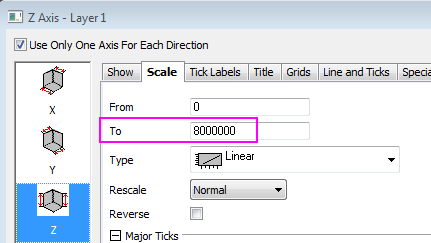
- Klicken Sie erneut doppelt auf das Diagramm und wählen Sie im Dialog Details Zeichnung die Zeichnung Graph1 im linken Bedienfeld. Klicken Sie auf die Registerkarte Anzeige und setzen Sie die Farbe auf Hellgrau. Klicken Sie auf OK, um den Dialog zu schließen.
- Klicken Sie doppelt auf den Titel der Z-Achse und ändern Sie ihn in Population (Million).
- Das Diagramm sollte am Ende dem im Bild unten entsprechen:
- Da es sich hier um ein 3D-OpenGL-Diagramm handelt, verwenden Sie die Schaltfläche Drehen
 auf der Symbolleiste Hilfsmittel oder halten Sie die R-Taste gedrückt und verwenden Sie die Maus zum Drehen. Sie können auch auf das Diagramm klicken und die Schaltfläche auswählen, um den Drehmodus zu aktivieren (siehe unten), oder Sie verwenden die Bedienelemente auf der Symbolleiste 3D-Drehung:
auf der Symbolleiste Hilfsmittel oder halten Sie die R-Taste gedrückt und verwenden Sie die Maus zum Drehen. Sie können auch auf das Diagramm klicken und die Schaltfläche auswählen, um den Drehmodus zu aktivieren (siehe unten), oder Sie verwenden die Bedienelemente auf der Symbolleiste 3D-Drehung:
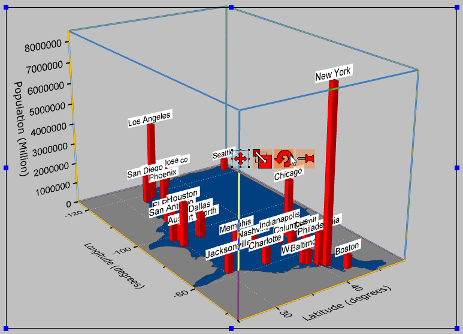